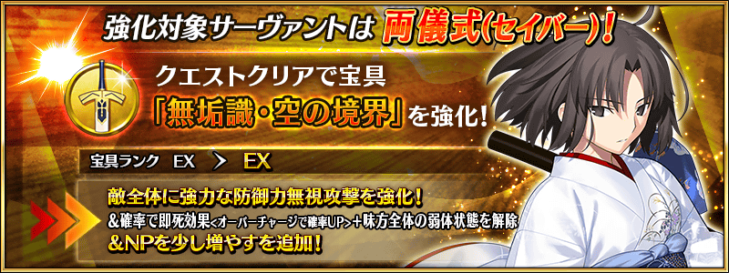

為了記念「空之境界 the Garden of sinners×Fate/Grand Order Arcade合作活動」的舉辦，常駐追加「空之境界 the Garden of sinners」關聯從者共2位的強化關卡！
不僅進行對象Servant的強化，也可獲得聖晶石做為關卡通過報酬。
※請注意從者強化關卡沒有文字冒險部份。
◆追加時間◆
2019年4月25日(四) AM9:00～
◆開放條件◆
持有的強化對象從者，必須使其最終再臨。
※未持有對象從者的話，不會出現關卡。
※關卡沒有舉辦期限。

關於「Fate/Grand Order Arcade」的詳情，請自下述URL確認。
|
|
標題:Fate/Grand Order Arcade 類型:英靈召喚團隊戰鬥 |